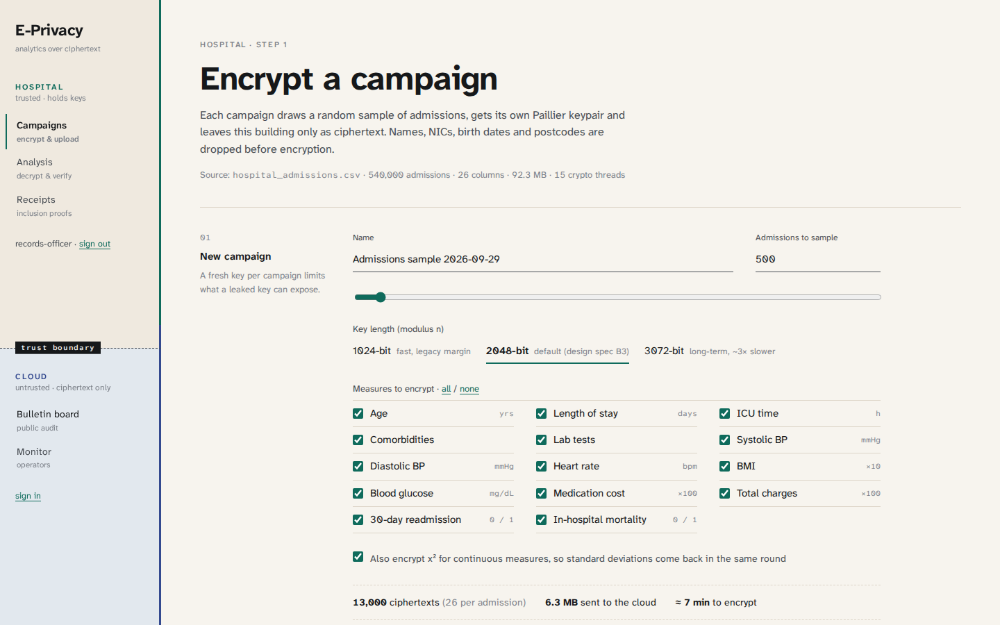
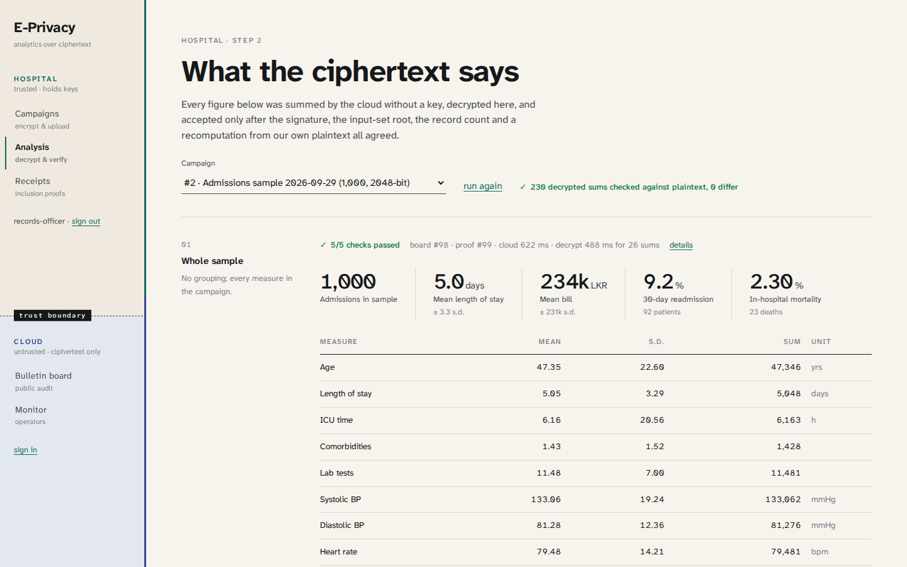
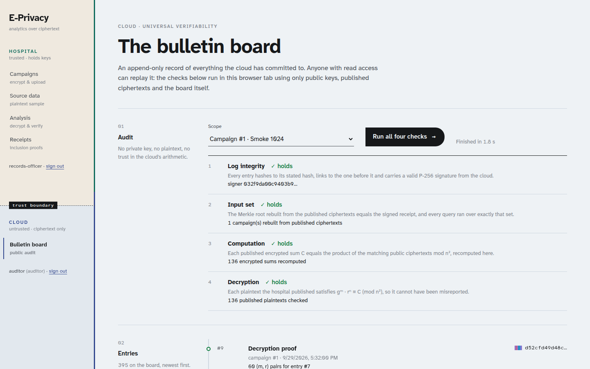

Hospitals want statistics. Normal analytics has to unlock every record first.
To compute, the server decrypts every record.
Insiders can read it in memory.
Hacked hosts and malware can scrape it.
Removing names does not hide people.
The cloud adds ciphertext. Only the hospital can read the total.
A fresh key for every campaign. Names and IDs never leave.

Paillier encryption is additive. The cloud never needs the key.
Signature, log, input root, record count and a local recompute.

A public, signed log. An auditor needs no key and no trust.

scan to try it on your phone
A fresh Paillier keypair for each campaign.
Identifiers dropped. Every measure encrypted.
The cloud signs a Merkle root over every record.
Grouped sums computed on ciphertext.
Five checks, then decrypt and chart.
Ten departments, fully synthetic.
Choose 1024 or 2048 per campaign.
Paillier against CKKS, 2 million records.
No individual can be singled out.
Storage figures come from our own benchmark. No real patient data is used.